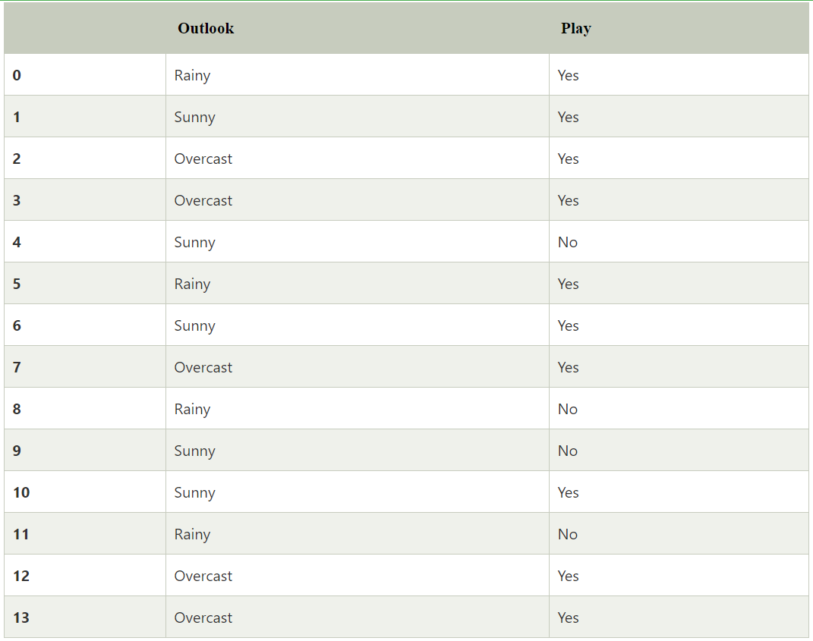
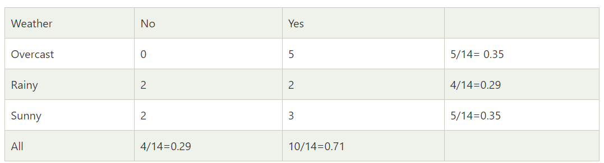
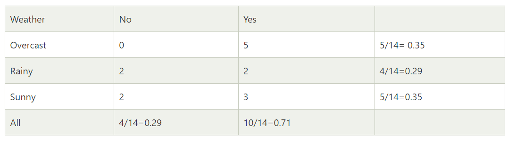

Classification
Classification is a process of categorizing a given set of data into classes, It can be performed on both structured or unstructured data. The process starts with predicting the class of given data points. The classes are often referred to as target, label or categories. The classification predictive modeling is the task of approximating the mapping function from input variables to discrete output variables. The main goal is to identify which class/category the new data will fall into.
Bayesian Classification is based on Bayes' Theorem. Bayesian classifiers are the statistical classifiers. Bayesian classifiers can predict class membership probabilities such as the probability that a given tuple belongs to a particular class.
Bayesian classification provides a useful perspective for understanding and evaluating many learning algorithms. It turns out that naive Bayes classifiers, which are discussed in the next section, are closely related to the Bayesian classification framework.
Bayesian classifiers are the statistical classifiers. Bayesian classifiers can predict class membership probabilities such as the probability that a given tuple belongs to a particular class.
Naive Bayes classifiers
Naive Bayes classifiers are a collection of classification algorithms based on Bayes’ Theorem. It is not a single algorithm but a family of algorithms where all of them share a common principle, i.e. every pair of features being classified is independent of each other. Naive Bayes classifiers have high accuracy and speed on large datasets.
For example: Suppose we have a dataset of weather conditions and corresponding target variable "Play". So using this dataset we need to decide that whether we should play or not on a particular day according to the weather conditions. So to solve this problem, we need to follow the below steps:
- Calculate Prior Probabilities for Play = Yes and Play = No
- Calculate Likelihood Probabilities
- Put these value in Bayes Formula and calculate posterior probabilities.
- See which probability is higher, the higher probability will be our answer.
First consider the below dataset:

Now if the weather is sunny, should the player play or not?
Frequency table for the weather conditions wiill be:

Here we need to calculate the probability of playing i.e. P(Yes | Sunny) and not playing i.e. P(No | Sunny) and check which probability is higher.
So using Bayes rule we can find the posterior probability from the above values as:

Applying Bayes'theorem:
P(Yes|Sunny)= P(Sunny|Yes)*P(Yes)/P(Sunny)
P(Sunny|Yes)= 3/10= 0.3
P(Sunny)= 0.35
P(Yes)=0.71
So P(Yes|Sunny) = 0.3*0.71/0.35= 0.60
Similarly,
P(No|Sunny)= P(Sunny|No)*P(No)/P(Sunny)
P(Sunny|NO)= 2/4=0.5
P(No)= 0.29
P(Sunny)= 0.35
So P(No|Sunny)= 0.5*0.29/0.35 = 0.41
So as we can see from the above calculation that P(Yes|Sunny)>P(No|Sunny)
So the player will play on a sunny day.
Forecasting
Forecasting is the process of making predictions of the future based on past and present data and most commonly by analysis of trends.
A commonplace example might be estimation of some variable of interest at some specified future date. Prediction is a similar, but more general term.
Both might refer to formal statistical methods employing time series, cross-sectional or longitudinal data, or alternatively to less formal judgmental methods. Usage can differ between areas of application: for example, in hydrology, the terms "forecast" and "forecasting" are sometimes reserved for estimates of values at certain specific future times, while the term "prediction" is used for more general estimates, such as the number of times floods will occur over a long period.
Bayesian Networks in Forecasting
Bayesian networks are a powerful tool for forecasting. They can be used to forecast the future state of a system, or to forecast the value of a variable. They can also be used to forecast the probability of a particular event occurring. Bayesian networks are particularly useful for forecasting when there is uncertainty in the data, or when the data is incomplete.
Decision Making
Decision making is the process of making choices by identifying a decision, gathering information, and assessing alternative resolutions. Using a step-by-step decision-making process can help you make more deliberate, thoughtful decisions by organizing relevant information and defining alternatives. This approach increases the chances that you will choose the most satisfying alternative possible.
Runway Excursion
A runway excursion is an incident involving only a single aircraft, in which the aircraft veers off or overruns the runway surface during either takeoff or landing. Runway excursions are the most frequent type of aviation accident, accounting for approximately 25% of all accidents and 50% of fatal accidents. Runway excursions are also the most common cause of aviation accidents in the United States.
Runway excursions are caused by a variety of factors, including:
- Runway conditions (e.g., snow, ice, water, slush, etc.)
- Weather conditions (e.g., wind, rain, fog, etc.)
- Runway surface (e.g., grooved, ungrooved, etc.)
- Runway length
- Runway slope
- Runway lighting
- Runway markings
- Runway signage
- Runway surface condition
- Runway surface friction

We will be considering the following factors for our decision making (The nodes in the network account for):
- Relevant Runway. It is a categorical variable: (A).
- Crosswind component at threshold. Unit of measurements is knots: (B).
- Speed of the aircraft which it is discretised to the nearest integer in the avionic: (kt).
- Tailwind component at threshold. Unit of measurements is knots: (C).
- Stabilised/unstabilised state at the approach: (D).
- Maximum reverse thrust, which describes the maximum reverse thrust is applied during ground roll. It is measured in seconds: (E).
- Autobrake state at landing, which has three values: low, medium, and no autobrake: (F).
- Difference between the Indicated AirSpeed (IAS) and the Final Approach Speed (Vapp): (G)
- Aircraft height at threshold, measured in feet (ft): (H).
Such networks are extensively used to find correlations, forecast excursions, etc.